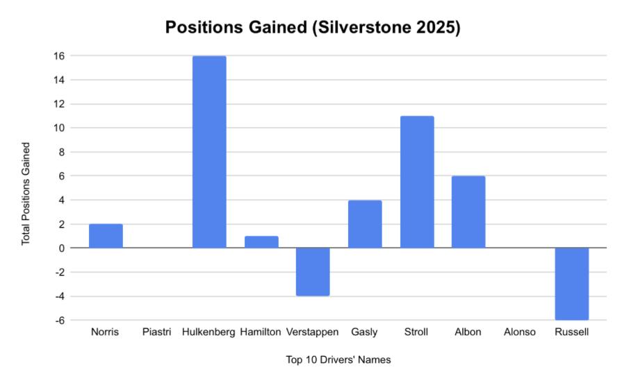
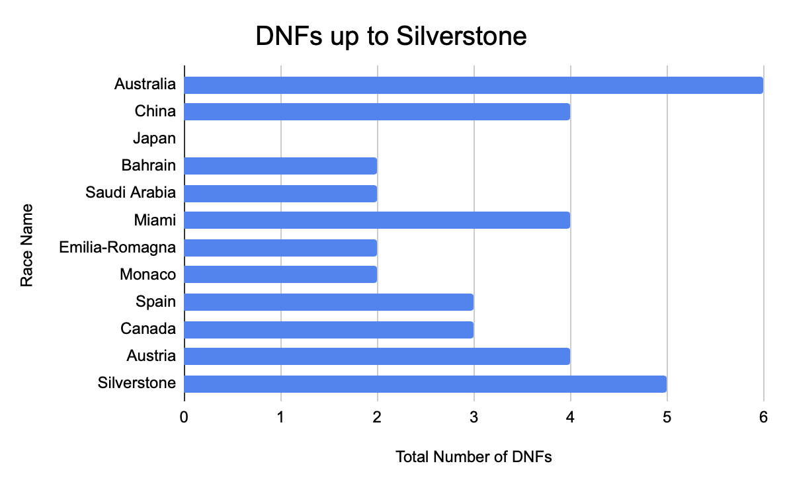
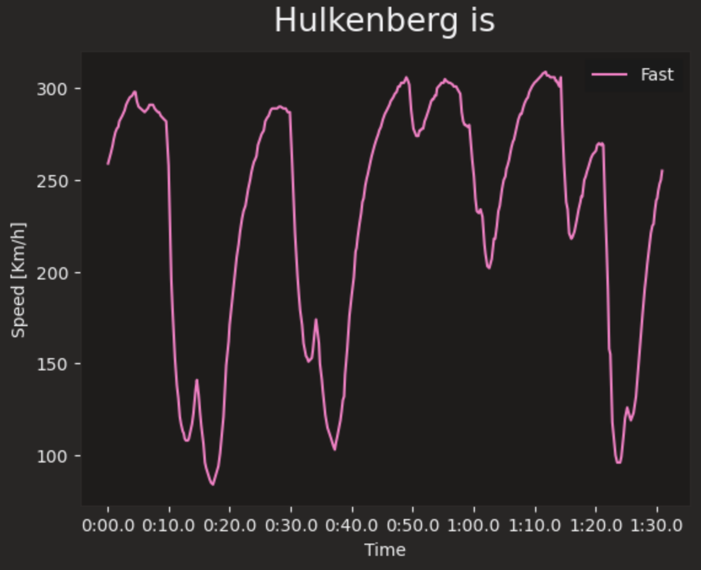
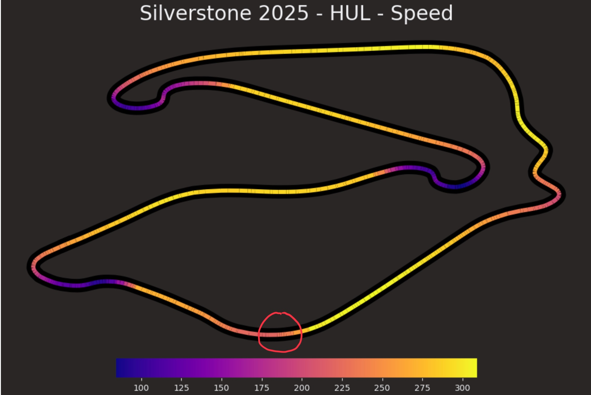
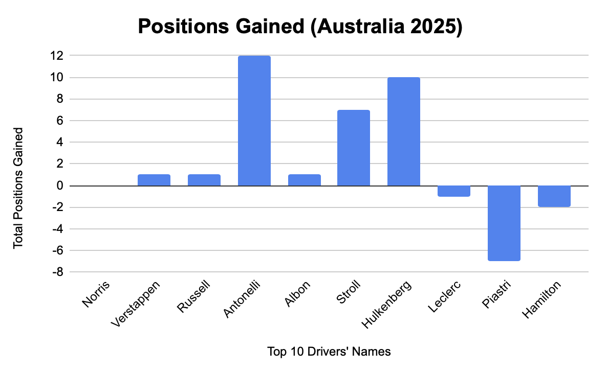

Chaos, Opportunity, and the Podium No One Predicted
By Melody Shen | January 09, 2026

Introduction
Formula 1, crowned as the pinnacle of motorsport, is also, unfortunately, quite predictable. Top teams with huge financial backing and faster cars, like McLaren and Red Bull, often dominate for long periods, with their drivers regularly finishing on the podium. What is much rarer is the surprise podium, a top three finish so out of the blue that no one expects it. Chaos, like DNFs and Safety Cars, often mold race outcomes, but unexpected results don’t emerge from instability alone. They also rely on strong driver performance and adaptability. By comparing the 2025 British Grand Prix, which produced a long-awaited podium, and the 2025 Australian Grand Prix, which featured similar disruptions but ended predictably, this article analyzes the various factors that truly create a surprise podium.
Background
Formula 1 races inherently involve plenty of risk. The danger starts during qualifying, where the 20 drivers, 2 per team, race a lap to determine their starting positions. Qualifying includes three knockout rounds: Q1 for positions 16-20, Q2 for positions 11-15, and Q3 for the top 10. Chaotic incidents, such as erratic driving and crashes, can occur during qualification and the race, triggering yellow flags that force drivers to slow down. Safety Cars (SCs) and Virtual Safety Cars (VSCs) could also be deployed, coming on to the track to slow down the drivers and often altering race strategies.
These factors often contribute to surprise podiums, top three finishes by drivers outside of the usual front-runner teams: Red Bull, Mercedes, McLaren, and Ferrari. One of the most dramatic surprise podiums was Nico Hulkenberg’s third place at Silverstone, the 2025 British Grand Prix. Acclaimed for outperforming in midfield cars yet holding the F1 record for the longest wait for a podium, Kick Sauber’s Hulkenberg finally claimed 3rd place on his 239th race, earning his team their first podium since 2012.
Silverstone Analysis
Averaging around 13th in prior races, a podium at Silverstone seemed highly unlikely for Hulkenberg. To make matters worse, he qualified 19th, second to last. Still, he conquered the impossible, gaining 16 positions, from almost last to third, in torrential rain.
Silverstone featured the second most DNFs up to the race itself, surpassed only by the Australian GP. Kimi Antonelli, Isaac Hadjar, Gabriel Borteleto, Liam Lawson and Franco Colapinto all failed to finish the race. Colapinto did not even start, due to a gearbox failure at the pit lane. Lawson and Borteleto’s DNFs happened early, lap 1 and 3 respectively. Since they qualified ahead of him, Hulkenberg capitalized on their misfortunes, gaining two positions without having to overtake or pass them on the track.
From the first lap, accidents, yellow flags and bad weather plagued the race, triggering multiple SCs and VSCs. With such heavy torrents that the drivers could barely see, there were many accidents and yellow flags. Around 21.15% of the race, or 11 laps, were driven under a SC or VSC, an unusually high involvement. Under the SC, drivers are not allowed to overtake each other, slowing down the front-runners. This compressed the field, decreasing the time gaps between drivers and helping midfield drivers like Hulkenberg to re-enter the battle with the leaders.

Still, all the chaos, with the numerous DNFs and SCs, does not fully explain how Hulkenberg reached his first podium. Other midfield drivers only slightly advanced their positions. For instance, Haas’s Estaban Ocon qualified 15th and finished 13th. Thus, there must be another factor at play: the driver’s consistency and adaptability.
Despite the constant changes from wet to dry weather, Hulkenberg maintained a relatively stable speed throughout the race, avoiding sharp drops. After each pit stop, marked by the dips in the line graph below, his speed rose quickly, demonstrating effective strategy calls. For example, after lap 26, Hulkenberg pitted, changing from medium to intermediate tires, adapting well to the transition from dry to slightly wet track conditions. Furthermore, he sustained a quick pace during the later half of the race, enabling him to perform a critical overtake on Lance Stroll and defend aggressively against Lewis Hamilton.
Hulkenberg’s overtake against Stroll, which advanced him into third place, happened at Stowe corner, circled in red in the heatmap below, where the speed is greater than at most other corners. Additionally, the heatmap, which represents Hulkenberg’s average lap speed over the 52 laps, reinforces how he kept a tight range and consistent pace throughout the race. This consistency prevented him from losing positions, compared to other competitors who made errors during tire-change phases. For example, after pitting for drier tires, Hamilton ran off the track, increasing the time between him and Hulkenberg and enabling Hulkenberg to secure track position.
Overall, Hulkenberg’s Silverstone podium resulted from both the race’s chaos and his consistency. While the numerous DNFs and SCs created opportunities, it was Hulkenberg’s racecraft that truly cemented his victory, converting those chances into advancements in track positions.
Australia Analysis
Next, let’s turn to the 2025 Australian GP, a race wracked with collisions yet ending with a normal podium result. The top three consisted of Lando Norris, Max Verstappen, and George Russell, drivers for McLaren, Red Bull, and Mercedes respectively. The podium finishers had minimal positional gains, with Norris holding his qualifying position and Verstappen and Russell each only gaining one position. In other words, it was as predictable a podium as you can get in Formula 1.
However, the journey there told an opposite story. Like Silverstone, Australia was chaotic, featuring six DNFs: Lawson, Borteleto, Fernando Alonso, Carlos Sainz, Jack Doohan, and Hadjar. With Australia being the first race of the season and with highly unpredictable weather conditions, it was no surprise that four of the six were rookies. Also, all six drivers were from midfield and backmarkers teams and qualified 10th or lower, so their retirements left the front-runners largely untouched.
Furthermore, even though around 34.5% of the race, or 20 laps, were driven under a SC or VSC, these events did not provide midfield and backmarker teams with significant opportunities, like they did at Silverstone. While the frontrunners executed efficient pit stops, changing for intermediate tires immediately when the rain began, the midfield and backmarkers failed to do the same. Due to FIA regulations, lapped cars, often from midfield or backmarker teams, were only able to join at the back of the field after unlapping, preventing them from gaining an advantageous pit window. Those who did pit often rejoined the race amidst heavy traffic, losing precious time. As a result, although chaos occurred, the drivers weren’t capable of converting it into a surprise podium.
Discussion
Comparatively analyzing Silverstone and Australian GPs reveals that race chaos alone does not guarantee a surprise podium. While commentators often attribute unpredictability to DNFs and SCs, the data suggests a more nuanced relationship. At Silverstone, the several retirements and unusually long time under the SC created wonderful opportunities for a potential surprise. Through consistent speed and superb race craft, Hulkenberg converted these chances, taking home his first podium. On the other hand, Australia also featured multiple incidents, yet ended with a podium full of front-runner team drivers. Qualifying is more decisive in races like Australia than Silverstone, due to fewer overtaking opportunities and a narrower track. The top contenders finished close to where they started, suggesting that despite the chaos, the overall order for the fastest drivers remained similar to the qualifying. The midfield and backmarker teams unfortunately were unable to capitalize on the DNFs and SCs, due to regulations and traffic. This suggests that surprise podiums require not only chaos-driving factors, but also depend on the driver’s ability to adapt and leverage these factors.
Conclusion
Ultimately, this paper argues that surprise podiums in Formula 1 arise from more than just racing accidents and crashes. While instability plays a crucial role, it becomes decisive only when paired with a driver’s ability to maintain a consistent, competitive pace and avoid mistakes. During Silverstone, Hulkenberg converted retirements into opportunities, advancing his position. In comparison, in Australia, the midfield and backmarker drivers failed to capitalize on the substantial disruption, and the front-runner teams maintained control of the race. Thus, surprise podiums come from the drivers’ ability to capitalize misfortunes during the race, not simply when chaos occurs.